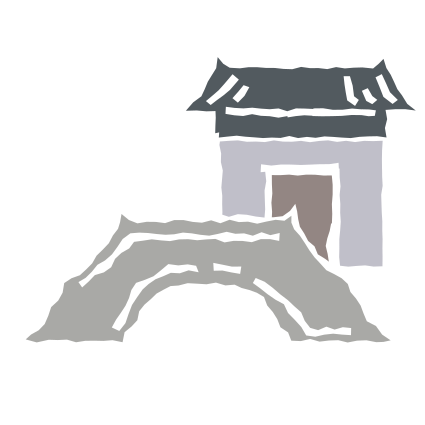
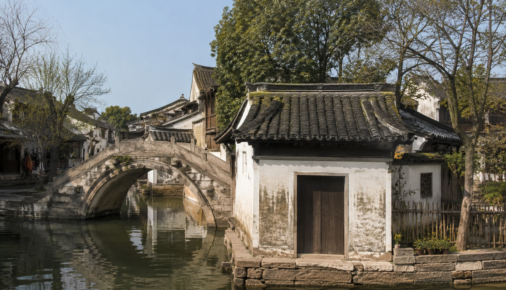
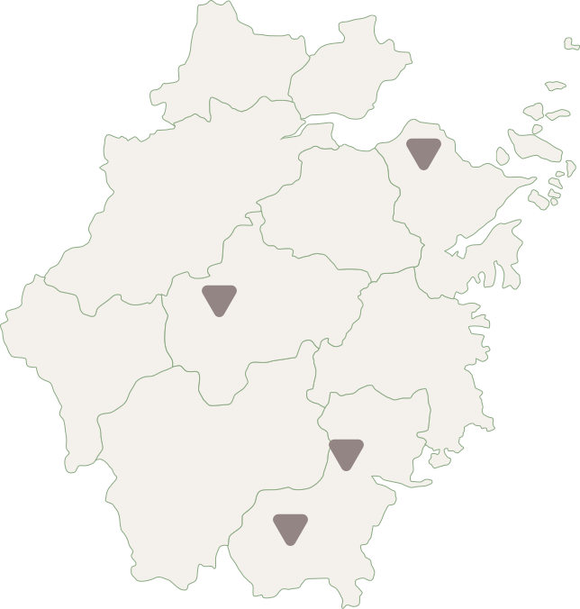

Explore Zhejiang
with your interests.
Zhejiang has lots of unique cultures and
experiences. Pick what you are interested in and put them
together. See what you find!
Pick what you are interested in and drag them together!
AI will discover places and cultures that reflect your choices.


Searching...
Finding a place shaped by your composition
Water Towns
Water towns are one of the defining landscapes of Jiangnan, where waterways, bridges, traditional houses, and everyday life are closely connected. In Zhejiang, visitors can explore historic villages, walk along quiet canals, cross stone bridges, and experience the slower rhythm of life shaped by water. It is a journey through both landscape and local culture.
Water Towns
Water towns are one of the defining landscapes of Jiangnan, where waterways, bridges, traditional houses, and everyday life are closely connected. In Zhejiang, visitors can explore historic villages, walk along quiet canals, cross stone bridges, and experience the slower rhythm of life shaped by water. It is a journey through both landscape and local culture.
Xihu
Jiaxing, Zhejiang
A quiet canal village where stone bridges meet traditional dwellings.


want to add more?
Explore other combinations and more unique cultural sites.